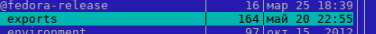
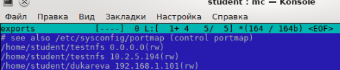
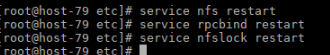
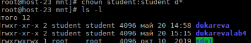

Подключение к FTP и NFS серверам
FTP
- В файле /etc/vsftpd.conf необходимо раскомментировать следующие строки:


- Просматриваем файл /etc/xinetd.d/vsftpd. Вносим нужные изменения:

- Переходим на другой ПК и делаем следующее:

NFS
- На ПК, на котором планируется установка сервера, создаем папку, которая будет монтироваться, и помещается в "Домашнюю папку". После чего заходим в mc и переходим в файл /etc/esports

- Там указываем, какая папка (полный путь к ней) будет монтироваться, и указываем IP адрес компьютера, которому разрешено подключение к ней.

- Перезапускаем сервисы nfs,rpcbind и nfslock.

- Переходим на ПК, с которого будет осуществляться монтирование. Создаем точку монтирования.
- Переходим в точку монтирования. Для корректной работы нужно назначить ей необходимые права.

- Монтируем из nsf сервера другой машины нужную папку в созданную точку монтирования(mount -t nfs /home/student/neuyutnova /mnt/neuyutnova4 и проверяем, осуществилась ли передача файлов.